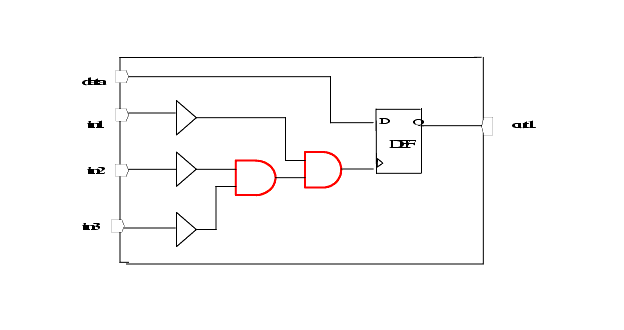

| Description | This rule detects if there are more than one combinational blocks on one clock path. |
| Policy | DESIGN |
| Ruleset | CLOCKS |
| Language | VHDL/Verilog |
| Type | Hardware |
| Severity | Warning |
module NTL_CLK39(in1, in2, in3, data, out1);
input in1, in2, in3, data;
wire in1_i, in2_i, in3_i, n1, clk_i;
output out1;
reg out1;
buf (in1_i, in1);
buf (in2_i, in2);
buf (in3_i, in3);
and (n1, in2_i, in3_i);
and (clk_i, in1_i, n1);
always @ ( posedge clk_i ) begin
out1 = data;
end
endmodule